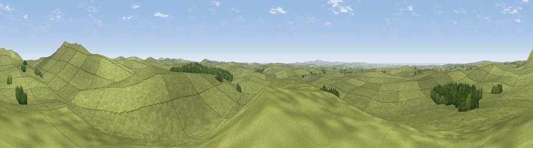

Garrow Tor
#9334 in England · top 19% of its area beats it · near St. BrewardThe view, rendered

A 360° render of this exact spot computed from the terrain model, tree cover and land cover — summer colours, afternoon light, calibrated against photographs of famous viewpoints. Real trees, hedges and buildings will differ in detail.
The panorama
Grey silhouette: terrain skyline in each direction (720 bearings, Earth curvature and refraction included). Dashed green: skyline with trees (+15 m) and buildings (+8 m) as obstacles. Blue strip: how far the ground is visible on each bearing.
Where the view opens
Wedge length = distance to the farthest visible ground on that bearing (vegetation-aware). Rings at 10, 25 and 50 km.
What fills the view
96% grassland · 3% woodland
Angular shares of the visible panorama (visual magnitude), not map area. Landscape diversity 0.08 (0–1 Shannon).
Key numbers
More beautiful places nearby
The staircase of upgrades: each row has a higher view potential than everything closer. Driving times are estimates from straight-line distance, calibrated against real road routing — check an actual route before setting out.
| Place | Direction | Drive | Score |
|---|---|---|---|
| Viewpoint c1582_4317 | ENE · 2 km | ~5 min | 67.5 |
| Brown Willy | NE · 2 km | ~5 min | 77.3 |
| Viewpoint near Treligga | WNW · 11 km | ~21 min | 79.3 |
| Viewpoint near Port Isaac | W · 12 km | ~22 min | 79.7 |
| Viewpoint near Lesnewth | NNW · 12 km | ~22 min | 82.6 |
| Viewpoint near Boscastle | NNW · 12 km | ~23 min | 84.3 |
| Viewpoint near Boscastle | NNW · 12 km | ~23 min | 85.2 |
| Viewpoint near Boscastle | NNW · 15 km | ~27 min | 85.8 |
50.57693, -4.62165 · source: dobih hill · position refined by local search. Computed location — check access rights before visiting.